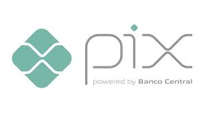

Começam a funcionar nesta segunda-feira (29) duas novas modalidades do PIX: o PIX Saque – que permitirá o saque em dinheiro em estabelecimentos comerciais – e o PIX Troco – que também permitirá o saque, mas associado a uma compra ou à prestação de um serviço. Com as novas funcionalidades, os usuários poderão fazer saques em estabelecimentos comerciais, não apenas em caixas eletrônicos. A oferta dos novos produtos, no entanto, é opcional e depende de adaptação dos sistemas das lojas.
caso queira voltar para a pagina principal clique aqui